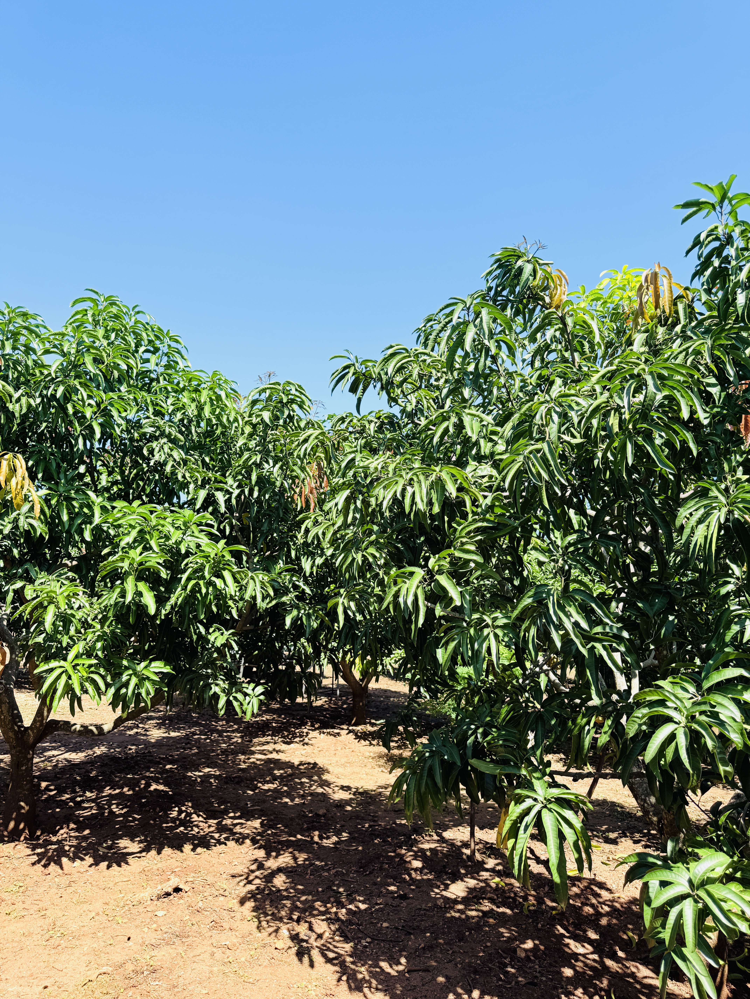
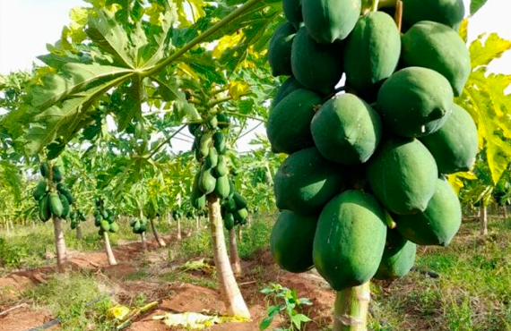
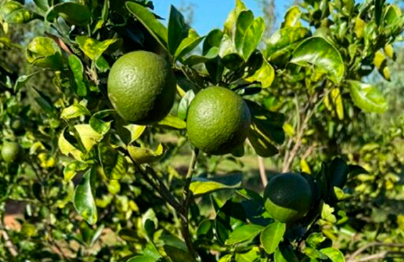
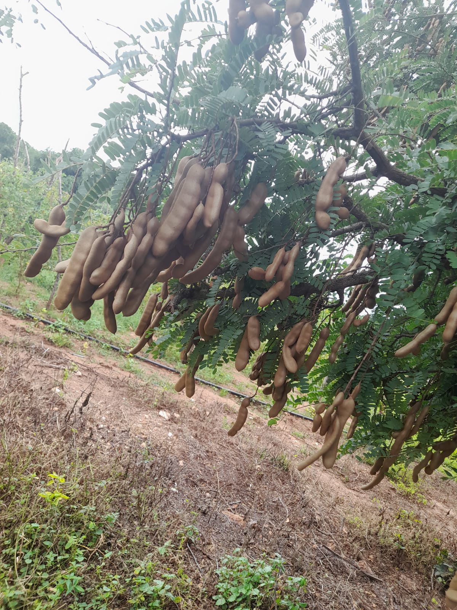
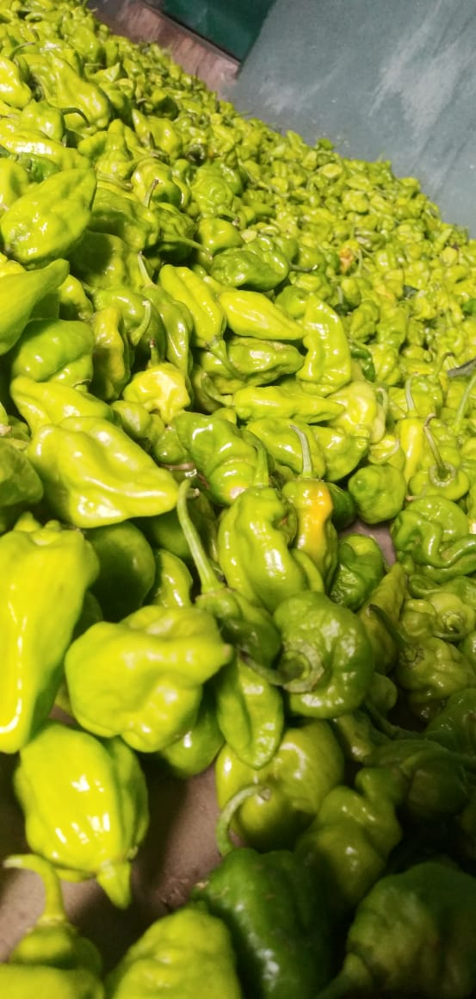

TJC Mango
- Our signature and most demanded fruit
- Rich, sweet flavour
- Deep golden colour
- Excellent shelf life

Discover premium fruits cultivated at
Green Techno Farm in Thanamalwila,
Sri Lanka.

ABOUT OUR FARM
Green Techno Farm specializes in cultivating premium-quality fruits grown on our 100+ acre plantation in Thanamalwila. Our produce is known for its rich flavours, vibrant colours, and consistent quality, meeting both local and international buyer expectations.
OUR PRODUCE


Refreshing flavour and high in natural vitamin C.

Naturally grown with rich, tangy flavour.

Fresh, crisp and high in quality.
OUR PROCESS
Premium fruit varieties cultivated across our 100+ acre plantation.
Continuous field care, natural practices and quality monitoring.
Hand-picked at the right maturity for peak freshness and quality.
OUR GALLERY
Get in touch with our team to discuss product availability, supply, or collaboration opportunities.
Our Farm
Thanamalwila,
Sri Lanka
Mon – Fri: 8.30 AM – 5.00 PM
(Sri Lanka Time)